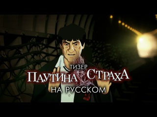
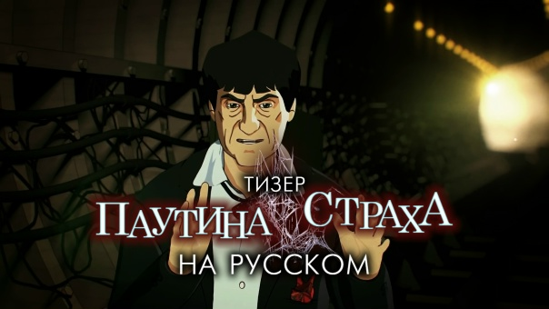

PARUSSKI или Original (ENG)
Субтитры: Русские и Английские

▰▰▰▰▰▰▰▰▰▰▰▰▰▰▰▰▰
The Web of Fear (Original Trailer - Animated)
приквел 5-й серии, 5-го сезона (1967-1968) Сеть страха
27 января 1968 года
Формат: 60-секундный мини эпизод
| Варианты озвучек: | * DUB PARUSSKI |
|---|---|
| Ссылки для скачивания: |
Консультационная сцена для первой части "Сеть страха", выпущенная 27 января 1968 года.
Специальная сцена была показана после шестого эпизода "Враг мира". В ней Патрик Траутон сыграл Доктора. Сохранилась только аудиозапись, но сцена была реконструирована с помощью анимации Би-би-си в 2021 году.
